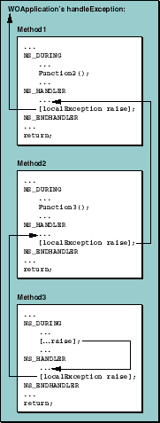

Table of Contents
Table of Contents  Next Section
Table of Contents
Next Section
Table of Contents  Previous Section
Previous Section

An exception raised within Method3's domain causes execution to jump to its local exception handler. In a typical application, this exception handler checks the object localException to determine the nature of the exception. For exception types that it recognizes, the local handler responds and then may send raise to localException to pass notification of the exception to the handler above, the handler in Method2. (An exception that's re-raised appears to the next higher handler just as if the initial exception had been raised within its own exception handling domain.) Method2's exception handler does the same and then re-raises the exception to Method1's handler. Finally, Method1's handler re-raises the exception. Since there's no exception handling domain above Method1, the exception is transferred to the uncaught exception handler as described below.
Table of Contents Next Section